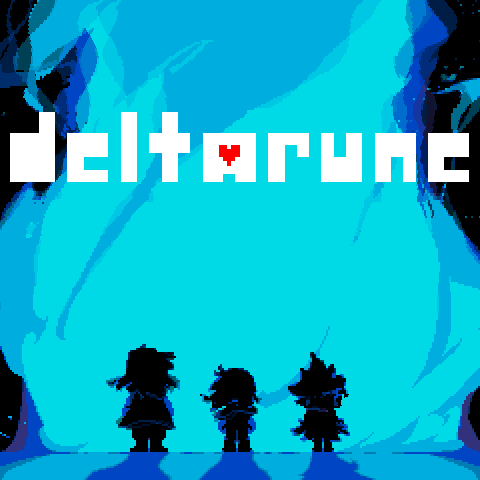

Howdy! My name is Nathan Alvarez. Names I go by or called are; Nathan, Nate, Chance, and Blaze. I love helping others and expressing my creativity through coding and music. Instruments I play include the snare drum, xylophone, piano, and guitar. I also love playing and modding video games. im in so many fandoms, i will catch any refrence. Pokemon? I LOVE FLAREON!!!!! My music taste is really varied, but most are either video game music or Jazz! Toby fox inspired me alot with his music and game making lol. I also began content creating with a friend (Link found in Contact) Go check it out! If you live near me, visit my resin shop where you can view charms I make! I also recently started making websites for others for just $5. want me to make you one? just contact me with an email! Another thing recently, people have been more interested in my websites rather than my actual shops. Because of this, Im also now making websites for others! Also in contacts, you can see details of how to get one by me... also in contacts, that youtube link may have a chance to redirect you... to what we can say, the inbetween link... goodluck! (one last thing... 10 clicks finds the man.)

Game
I love playing video games and exploring creative ways to mod them.
I enjoy playing instruments like snare drum, xylophone, piano, and guitar.
Programming in Python, C++, Javascript, and HTML is something I do both for fun and productivity. Im also making websites for others for only $15! (without custom domain or legal things, see link in contacts for details).
I complete tasks quickly when I'm interested, though I sometimes procrastinate on work I dislike.
I love to craft on my freetime, with another website I have leading to a shop I made for resin charms (SEE CONTACT BELOW FOR LINK).
If you'd like to reach out, feel free to connect!
★ Email Me ★ ★ Text Me ★ ★ My Resin Charm Shop!★ ★ Order a Website Made By Me! ★ ★ My shared youtube channel★